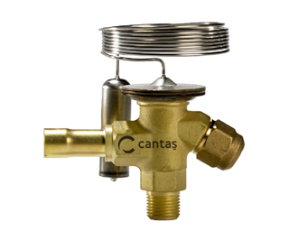

☎ 0216 344 48 19

Danfoss 068Z3406 TS 2 R404A (İç D.-Rak.) MOP NM, soğutma/iklimlendirme genleşme vanaları yedek parçası. Doğru model eşleşmesi ve hızlı tedarik için ürün kodunu bize iletin; KlimaSun güvencesiyle temin edilir.
| Ürün Kodu | 068Z3406 TS 2 R404A (İç D.-Rak.) MOP NM |
|---|---|
| Marka | Danfoss |
| Alt Kategori | Genleşme Vanaları |
| Özellik | Danfoss |
| Temin Durumu | Temin Edilebilir |
Sıfır ürünlerde üretici garantisi; revizyonlu / 2.el ünitelerde ürüne göre 6–12 ay Klimasun garantisi. Kapsam teklifte belirtilir.
Stoktaki ürünler aynı iş günü kargoya verilir; stokta olmayanlar Almanya ve İtalya'dan sipariş üzerine orijinal olarak temin edilir.
2004'ten beri endüstriyel iklimlendirmede Erdinç Klima güvencesi; F-Gaz / EKOMVET yetkinliği, kurumsal e-fatura ve teknik destek.
Bu model için yedek parça ve muadil seçenekleri için kodu bize iletin: Danfoss ürünleri · muadil ürünler · servis & bakım.
Evet. Danfoss 068Z3406 TS 2 R404A (İç D.-Rak.) MOP NM arızalı ünitelerine bakım, kompresör değişimi, gaz şarjı ve revizyon dahil servis veriyoruz.
Stok durumuna göre sıfır, revizyonlu 2. el veya sipariş üzerine temin edilebilir. Teklif formundan sorabilirsiniz.
Uygun muadil / eşdeğer ürünler için kodu bize iletin; güncel Rittal ve MKS Clima muadilleri önerilir.